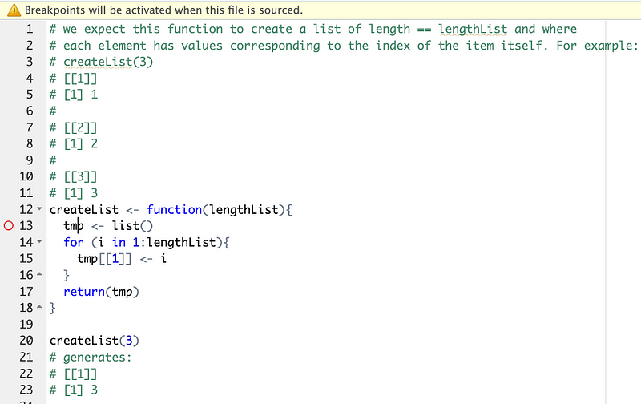
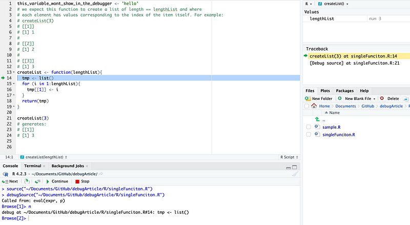

No matter how careful and experienced you are as a developer, you will make mistakes. And even if you are perfect, the development process rarely is. Misunderstandings, assumptions, and poor communication can cause errors.
The technique developers use to find the root cause of errors is called debugging.
Today we will look at how to use the debugger built-in into RStudio.
Initialize the debugger
There are several ways to initialize the debugger in R. The simplest one is to click on the line number you want to start exploring. You will see a red dot appearing on that line. This is what is called breakpoint.
The next time RStudio will execute your code it will encounter the breakpoint and it will enter debug mode.

Another way to initialize and interact with the debugger is by using the top menu on RStudio: Debug.
The debug mode
In debug mode we are using a special interactive R session. This session workspace can “see” only what is available to the specific part of the code we run. For example, if we are debugging a function, the debugger only sees what is inside the function scope.

Now that we have initialized the debugger, we can interact with it. We have a few options that can be selected from the debugger UI, the Debug menu, or with keyboard shortcuts. The options are self-explanatory, and they include options to:
- Execute the next line of code.
- Step into a function.
- Jump to the end of the current function or loop.
- Exit the debugger.
All you have to do is select the appropriate option and closely examine the workspace. Are the variables created as expected? Do they have the correct type, value, dimensions, etc.?
If we do this exercise with our code example, we quickly realise that the loop is not growing the list because the list index is not dynamic. It is always tmp[[1]] instead of tmp[[i]].
How to debug quickly
Debugging can be a lengthy process, particularly if you have no indication of where a problem might be. A good logging strategy can save you a lot of time. You can find an introduction to logging here.
Another useful option to find the root cause of an error is to use traceback(). This function will print the call stack that lead to an error. You ca then limit your debug to call stack, at least initially.
Special cases: Dashboard, API, Markdowns
The debugger is designed to work with “traditional” code: functions, objects, and scripts. This is one of the reasons I always recommend separating the business logic from the front-end. The more code you can shift to the business logic in the form of standard R code, the easier it is to debug and test your code. I have a few articles dedicated to organize R code for different projects:
There are options to work with the debugger with advanced tools such as Shiny dashboards, API, or R markdowns. You can find them documented in the links at the bottom of this article. However, they are workarounds more than alternative solutions. Just compartmentalize your code in “pure”, isolated R files to make debugging easier.
Debugger vs testing
A question I get asked often is why to use the debugger when we have unit testing.
These two tools serve different purposes. Unit tests are formal statements of what your code should or should not be doing. They should run automatically at every deployment. Any test failure should stop the deployment. The debugger is useful when you are developing or troubleshooting. There is no formal definition of expectations in debugging.